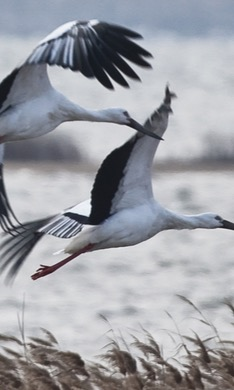

K-Environmentalism
K-Environmentalism Magazine — preserving culture for the future
Pet-Net — collecting trash on the water while rowing


Row for Pure, Cut through Sweat — environmental campaign on the water
Byeotjip — straw stacks and sustainable regeneration


Getbol — Korea's mudflat as a model for carbon neutrality